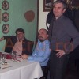

Mai întâi, Realitatea TV a redevenit o televiziune prietenoasă cu PD-L şi cu preşedintele Traian Băsescu, iar în schimb, Sorin Ovidiu Vântu n-a mai stat nicio zi în arest. Apoi, preşedintele Băsescu s-a transformat în agent de audienţă al televiziunii patronate formal de Elan Schwartzenberg, unul dintre nenumăraţii pioni marca SOV. Luni, 20 februarie, un ziarist de casă al lui Vîntu, Dan Suciu (foto), e numit purtător de cuvânt al Guvernului condus de Mihai Răzvan Ungureanu. Cât de apropiată a redevenit Puterea de Sorin Ovidiu Vîntu?
Presa românească a trecut cu o lejeritate suspectă peste CV-ul noului purtător de cuvânt al Executivului. S-a mulţumit să preia comunicatul oficial care spune:
Dan Suciu, redactor-şef al TMCTV, absolvent al Facultăţii de Filosofie, a scris pentru publicaţiile Privirea, Banii Noştri, Prezent, iar din 2006 a fost realizator al postului TV Money Channel.
Tatulici, Trofeul Calităţii, Alexandrion şi Vântu
Acestea sunt bornele carierei jurnalistice ale lui Dan Suciu. Haideţi să le tratăm pe rând, în ordine cronologică:
1Revista Privirea, unde Dan Suciu a fost redactor-şef, aparţinea la vremea respectivă, lui Mihai Tatulici şi soţiei acestuia, Veronica Mihaela Tatulici. Că Tatulici este un obişnuit al plimbărilor pe canalele Deltei Dunării organizate de Vîntu nu mai e deja o noutate. Îl puteţi admira pe Mihai Tatulici în vizită la celebrul SPA, domiciliul lui SOV, alături de Cozmin Guşă aici.
Numele Mihaelei Tatulici apare şi în anchetele legate de fraţii Cămătaru. Nuţu, Sile, Fluturică, Tamango, Ghioală şi Mască sunt compania selectă de dosar a soţiei realizatorului TV.
2Timp de 5 ani, începând cu anul 2000, Dan Suciu e redactor-şef la revista Banii Noştri. Când spui Banii Noştri, automat te gândeşti la Adrian Năstase şi dosarul penal Trofeul Calităţii în Construcţii, unde, de altfel, fostul premier a fost condamnat la doi ani de închisoare cu executare. Publicaţia Banii Noştri aparţine Ioanei-Maria Popovici (MEDIA ON SA, A ROND SRL), condamnată şi ea în dosarul menţionat la 7 ani de detenţie pentru spălare de bani, complicitate la abuz în serviciu contra intereselor publice şi fals în înscrisuri.
3Înainte de a reveni la SOV, dragostea profesională dintâi, Dan Suciu are o experienţă meteorică la revista gratuită Prezent, deţinută de George Christoforidis, directorul Alexandrion Group România, prin Greek Media Group (GMG). Revista Prezent a existat pe piaţă cam cât durează o mahmureală serioasă după o sticlă de coniac.
4După 2006, Dan Suciu lucrează la televiziunea The Money Channel, înfiinţată şi patronată de Sorin Ovidiu Vîntu, unde are o relaţie de strânsă colaborare şi amiciţie cu Sorin Ovidiu Freciu, preşedinte al Grupului Gelsor şi cu Lucian Sârb, un apropiat al omniprezentului Cozmin Guşă, fondatorul GeoPOL şi actual proprietar al PetromService (PSV Company). Fotografia alăturată vorbeşte de la sine despre natura relaţiei dintre Suciu, Freciu şi Sârb.
De ce contează
Nu contestăm inteligenţa remarcabilă, coerenţa discursivă şi carisma lui Dan Suciu. Dată fiind proaspăta sa numire ca primă voce a Executivului Ungureanu, ni s-a părut însă interesant să menţionăm oamenii care i-au marcat evoluţia profesională. Pentru că, atunci când eşti purtător de mesaj al Guvernului României, eşti plătit din bani publici şi vorbeşti în numele fiecărui român.
“Spune-mi cu cine te însoţeşti, ca să-ţi spun cine eşti” e o vorbă din bătrâni. Poate că nu e integral aplicabilă în cazul carierei jurnalistice a lui Dan Suciu, însă cu siguranţă parafraza “spune-mi cine te-a plătit, ca să-ţi spun cui îi eşti îndatorat” are sens pentru orice român ajuns într-o funcţie publică.


{kind=link}
{kind=link}
{kind=link}
stai ca nu inteleg, parca SOV a fost condamnat recent, nu? cu executare.
SOV e liber ca pasărea cerului. Mă rog, mai mult ca struţul, dar tot liber e. Despre asta e şi vorba.
Condamnarea la care te referi (în dosarul de şantaj instrumentat la plângerea patronului RTV, Sebastian Ghiţă) a fost dată de prima instanţă (Judecătoria sectorului 1), fiind atacabilă la Tribunalul Bucureşti. Cum judecarea se face cu inculpatul în stare de libertate, rezultă că Sorin Ovidiu Vântu se bucură de SPA în continuare.
e misto blonda din drrrrrrreapta!
Bai frate, in Romania, cum te invarti si cum o dai, nimeresti tot peste Vantu, Voiculescu, Patriciu si marionetele lor! Nu facea Basescu misto de ziaristii tonomat? Uite ca nici guvernul pdlist n-are un reprezentant mai breaz.
Comments on this entry are closed.